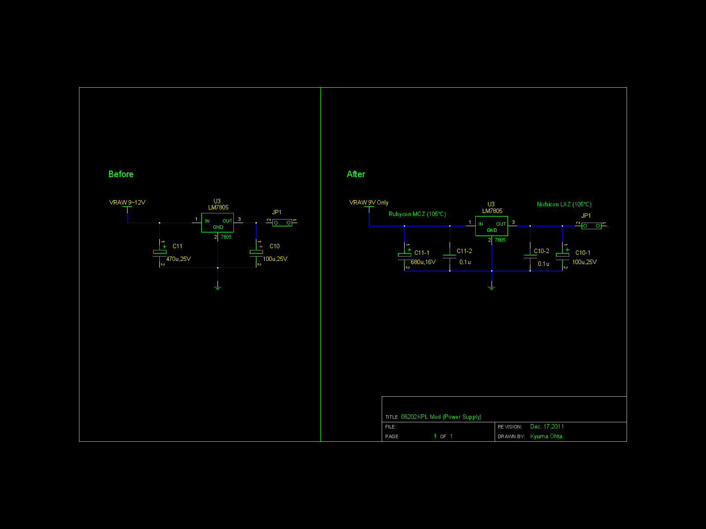
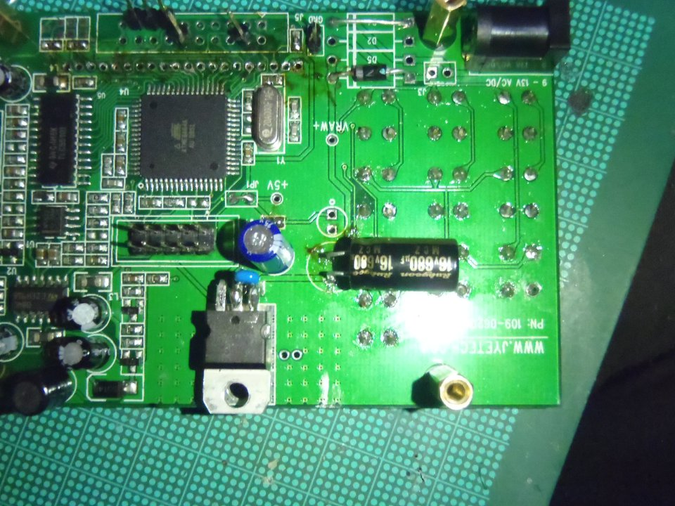
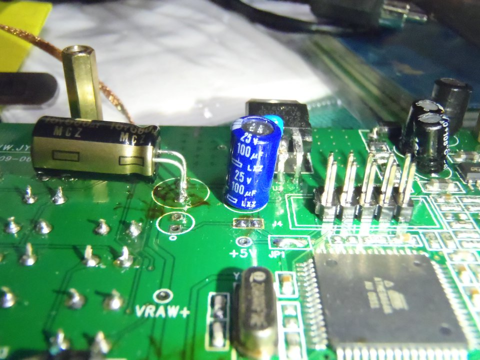
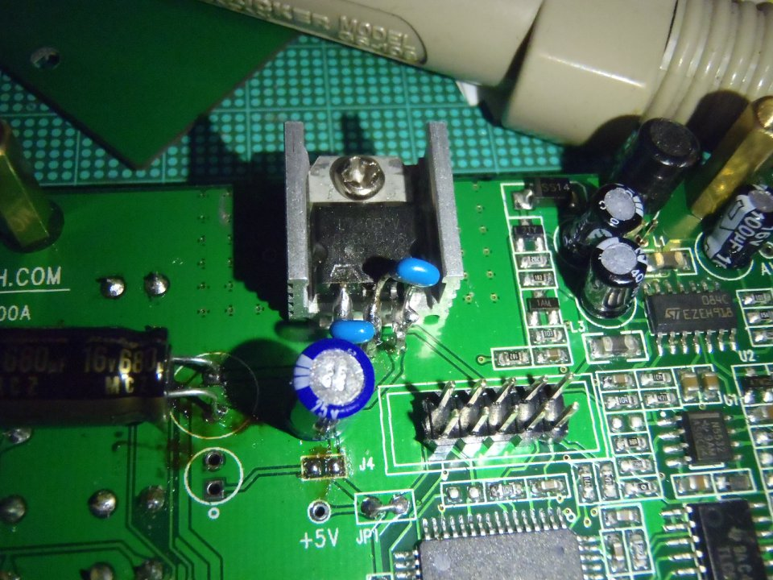
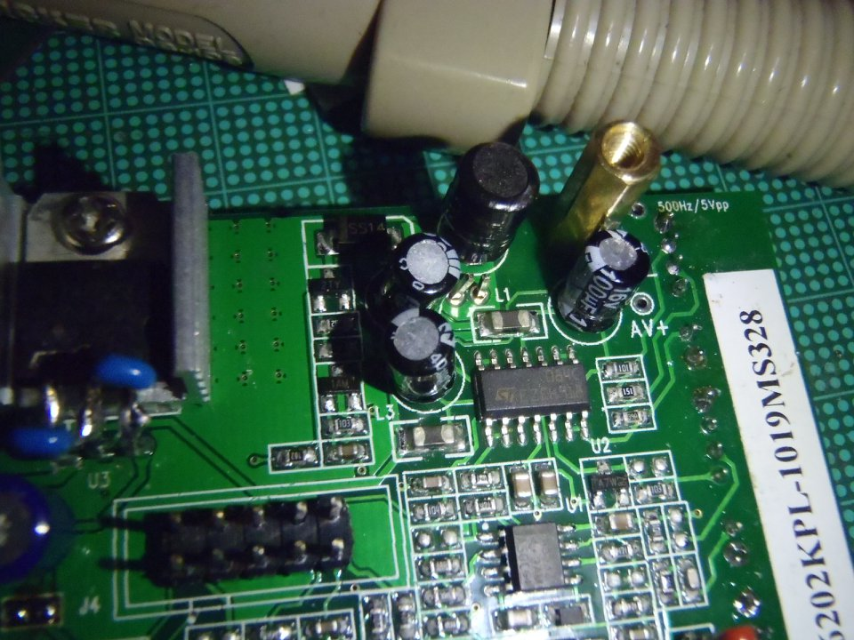
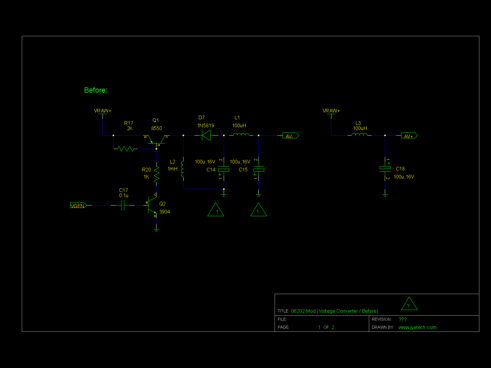

Sorry, under construction and Japanese only,Yet...
オシロスコープキットを作る(2011-12-18)
きっかけ
前回作ったLED照明、やっぱしリップルやノイズがどの程度か気になります。
オシロスコープは欲しい、しかし二万円台の安ものすら買える金が無い…
とおもいつつ、秋月電子通商のページを見てたら、簡易なものが４千円で！！これは買ってみるしか無い。
概要
このキットは、中国のJYE
Tech社が開発した非常に簡易なオシロスコープです。
今回は、既にメーカ生産が終わってる06202KPを作りました。７００円安かったので(^_^；
現行生産モデルで秋月電子から入手できるのは06204KPです。（秋月電子通商での販売ページ）
注意
このキットは（たぶん）４層スルーホール基板ですので、ハンダ付けにスルーホール基板固有のコツが要ります。
表面実装部品が実装済みではあるものの、基板の出来がいまいちで製作に骨が折れます。
そして、何より後から改造しないと厳しいところも多々あるのでスルーホールでのハンダ除去に自信がある人以外お奨めできないです。
（かくいう私も液晶の２０ピンコネクタを取っては付けてを繰り返してて、スルーホール壊せないので一回一時間以上掛けるという…)
温度調整型のはんだごて一本か、もしくは15W程度の通常のはんだごて以外に
70W前後のベタアースハンダ付け用の高熱量はんだごてを併用する事を強く薦めます。
又、テスターは必須です。
もくじ(Work in Progress)
・改造
1.電源系の改造
2.電圧コンバータ系の改造(現在進行形)
電子工作系もくじへ
全体目次へ
改造
オシロキット内部の基準信号のデータを見ると、方形波の上下で液晶１ドット分（大体0.2V）程度のブレやヒゲらしきものが見えてきます。
これを改善しようというのが目的。
1.電源系の改造

電源系改造回路図（リンク先にgSCH形式の回路図)
まずは、元電源であるスイッチング電源やその他の機器のノイズが混入してることを疑いました。
そこで、
・３端子レギュレータにかかってるスパイクノイズの除去のために３端子の入出力に0.1μFのセラミックを追加
・入出力のコンデンサを手持ちの低ESRかつ大きめの容量の品に交換
と言う感じでやって見ました…




が、若干しか改善してない(?_?)
これは、別の所が原因だ。
液晶のハンダをプチプチ一時間以上掛けて除去して液晶を外し、更にコンデンサの片方がベタアース直結同然でハンダがなかなかとれないので７０Ｗのコテまで持ちだしたのに、なんという徒労だったのか＿|￣|●
でも、この改造自体は元のキットについてきた安物臭プンプンのケミコンからのリプレースによる電源系の強化・長寿命化の目論見でもあるので、残すことにしました。
2.電圧コンバータ系の改造(現在進行形)

電圧コンバータ回路図©JYE TECH（リンク先にgSCH形式の回路図)
オシロスコープへの入力を増幅してADコンバータに届ける信号を増幅するオペアンプの性能を発揮するために負の電源電圧を作ってやる必要があります。
本キットでは、CPUで作られたタイミングパルスを使って、チョッパ式の電圧変換を行いマイナス側の電源を作っています。
従って、この電圧の質が悪いとADコンバータの入力がブレて・結果として問題にしてる現象が起きるのだろうと考えました
今後のプランは
①Maximやリニアテクノロジー辺りが出してる電圧コンバータICに置き換える。多分、パターンカットなしで三部品の除去と小基板の追加で済む
②L1とL3の強化・C14,15,18の低ESR化・C15,18に並列に0.1μF程度をつける
のいづれかにします。どちらも作業的には一長一短あるので少し考えて部品買い溜めます（＾＿＾；
本ドキュメント・及びノウハウは CC BY SA v3.0で公開します。
CC BY SA v3.0で公開します。
実装技術等の特許登録はこれを禁じます。(DO NOT PATENT THIS TECHNIQUES)
後日問題が出た場合は変更の可能性あり。
LED-INVERTER by http://sky.geocities.jp/artanejp/ELECTRONICS/
is licensed under a Creative Commons
Attribution-ShareAlike 3.0 Unported License.
電子工作系もくじへ
全体目次へ
Last Update: 18 Dec.2011 by Artane. ( whatisthis.sowhat _a_t gmail.com )